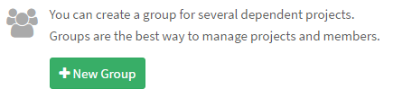
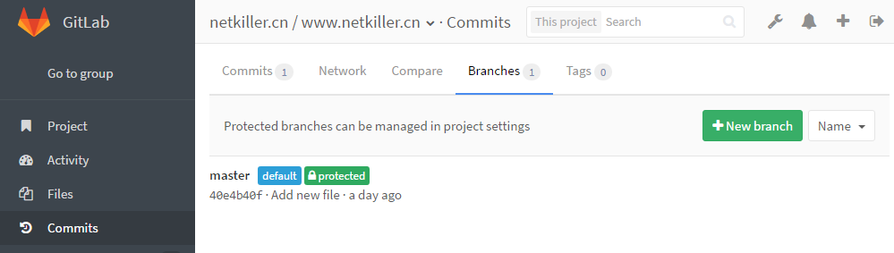

实施DEVOPS首先我们要有一个项目管理工具。
我建议使用 Gitlab，早年我倾向使用Trac，但Trac项目一直处于半死不活状态，目前来看Trac 对于 Ticket管理强于Gitlab，但Gitlab发展的很快，我们可以看到最近的一次升级中Issue 加入了 Due date 选项。Gitlab已经有风投介入，企业化运作，良性发展，未来会超越Redmine等项目管理软件，成为主流。所以我在工具篇采用Gitlab，BTW 我没有使用 Redmine，我认为 Redmine 的发展方向更接近传统项目管理思维。
软件项目管管理，我需要那些功能，Ticket/Issue管理、里程碑管理、内容管理Wiki、版本管理、合并分支、代码审查等等
关于Gitlib的安装配置请参考 http://www.netkiller.cn/project/project/gitlab/index.html
Procedure 12.2. Gitlab 初始化 - 创建组
-
点击 New Group 按钮新建一个组，我习惯每个域一个组，所以我使用 netkiller.cn 作为组名称
 -
输入 netkiller.cn 然后单击 Create group

-
组创建完毕

创建组后接下来创建项目

起初我们应对并行开发在Subversion上创建分支，每个任务一个分支，每个Bug一个分支，完成任务或修复bug后合并到开发分支(development)内部测试，然后再进入测试分支(testing)提交给测试组，测试组完成测试，最后进入主干(trunk)。对于Subverion来说每一个分支都是一份拷贝，SVN版本库膨胀的非常快。
Git 解决了Svn 先天不足的分支管理功能，分支在GIT类似快照，同时GIT还提供了 pull request 功能。
我们怎样使用git 的分支功能呢？ 首先我们不再为每个任务创建一个分支，将任务分支放在用户自己的仓库下面，通过 pull request 合并，同时合并过程顺便code review。
master：是主干，只有开发部主管/经理级别拥有权限，只能合并来自testing的代码
testing: 测试分支，测试部拥有权限，此分支不能修改，只能从开发分支合并代码。
development：开发组的分支，Team拥有修改权限，可以合并，可以接受pull request, 可以提交代码
tag 是 Release 本版，开发部主管/经理拥有权限
分支的权限管理：
master: 保护
testing：保护
development：保护
Procedure 12.4. Gitlab 分支应用 - 创建分支
-
首先，点击左侧 Commits 按钮，然后点击 Branches 按钮进入分支管理
 -
点击 New branch 创建分支

在 Branch name 中输入分支名称，然后点击 Create branch 创建分支
-
分支已经创建

重复上面步骤，完成development分支的创建。
保护分支：锁定分支，只允允许合并，不允许提交